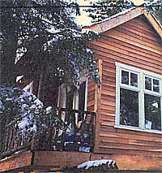
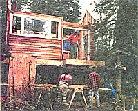
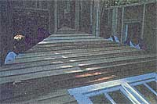
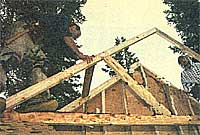
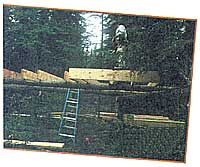
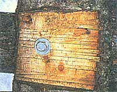
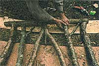
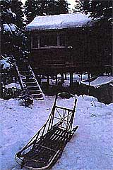
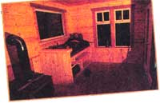

Out On A Limb
By Melissa DeVaughn
December/January 1997
Virtues of the High Life.
Gus Guenther has risen above frantic rush hour traffic, busy schedules and frenzied deadlines.
Literally.
From where he lives, at the end of a dirt road in a small community in South-Central Alaska, Guenther watches the birds perch on his balcony, and the spruce trees blow in the morning breeze, all from inside his one-room tree house abode.
The place is not big, about 12 feet by 16 feet, nor is it luxurious: there's one propane lamp, a wood stove and a propane stove on which to cook, but it is simple, cost-efficient and allows Guenther all the time he wants to pursue more important matters, like mushing his 14 dogs across the snow-packed Caribou Hills that surround his wooded home.
"Why wait until you're 65 to retire when you can live this way all your life?" asks Guenther, who lives off the money he makes as a fisherman in the summers, and runs his dogs in the winter. Because he has no debt, the 28-year-old single man lives with virtually zero expenses, other than the basics, like food for him and his dogs, propane, and gas for his truck. "That's when I feel like I'm getting away with something ...and I feel guilty," he says. "I can't figure out why other people don't do it."
In the six years the Pennsylvania native has spent in Alaska, Guenther has accumulated a lifetime of frontier experiences. Soon after moving to Alaska, he knew the state was much too beautiful and exciting to allow himself to be confined to the reg ular daily routine of a 9 to 5 job. Before long he was jobless and penniless, but free to explore all Alaska has to offer.
"I didn't really go out with the intention of living like this," Guenther confesses. "It was just something that kind of came about. When I had the job, I thought I could never live without it, because I was so used to it, but I was afraid of quitting because I didn't think I could survive up here without a job."
But Guenther did survive, working summers as a deckhand on a com mercial salmon boat, a job that re quired long hours toiling with fish-laden nets in dangerous conditions.
Meanwhile, he had winters off to pursue other Alaskan traditions, like sled dog racing. With his commercial fishing money in his pocket, he rented a small cabin, borrowed a team of dogs and hit the trails, learning as he went.
He soon found that building a tree house was not nearly as complicated as it seemed. With a little experience and guidance from an expert tree house builder, Guenther was able to build his elevated home in less than three weeks. During a weekend trip to visit friends in Alaska, Seattle-area home and tree house builder Peter Nelson met Guenther, and the two started talking about Nelson's work. By the end of the trip, Nelson offered to build a tree house for Guenther.
The match was perfect. Nelson, who had already published one book on tree houses and was in the process of writing a second, needed fodder for his new book and Guenther, who was tired of living on borrowed land in cabins that weren't his, needed a home.
With a little more than a month to prepare, Nelson flew to Washington state, gathered up all of his equipment, and then flew on back to Alaska. Meanwhile, Guenther searched for an appropriate piece of land, pored through advertisement circulars for marked down construction items, and secured enough wood to build the tree house.
Then he called on friends, neighbors and those handy with a hammer to help raise perhaps the first sky high home ever built in Alaska.
Choosing a site was the most important step in the process. Nelson and Guenther had to find healthy trees that weren't too young or too old. Finding four trees spaced evenly apart was also a challenge.
"We got kind of lucky to find the four that we did," Guenther recalls. Not only did Guenther want trees strong enough to support his home, but they had to be positioned near his dog yard, and close enough to his parking area, both near the front of his four acre wooded property. Also, since Guenther hauls in his water, he didn't want to have to carry it all the way to the back of his land.
The project required less than 1,000 board feet of wood, most of which came from a local sawmill. He used 70 sheets of plywood, which cost $700, and framing lumber ranging from 2 x 12s to 2 x 4s. He also needed four, 3/4 X 14-inch galvanized lag bolts with washers (about $7 apiece) to anchor the base of the house to the supporting trees.
"You might think more bolts are better, but they're not," Guenther says, recalling the many lessons he learned from Nelson during the building process. "You only want to put one in each tree, because one bolt won't kill the tree. The bolt goes way into the tree, then the tree grows around the bolt."
If too many bolts pierce the tree, Guenther explains, the risk of disease and of killing the tree rises. To safely insert each bolt, Nelson brought with him an industri al size drill and an enormous ratchet to secure each piece of metal into its living host.
The most efficient way to build a tree house, says Nelson, who has spent the past 10 years building tree houses as part of his business, PJ Playhouse Inc., is to construct the walls first then hoist them up to the tree. But since Guenther's house is only 8 feet off the ground, they built each wall-from the framing to the sheeting to the outdoor siding-on the completed tree house floor and lifted them from there.
"The most important thing in Gus's case was that we were using 2 x 4 construction using green wood and that's very heavy," Nelson recalls. "Secondly, his ground was uneven and there wasn't any set place for a building surface, which is a handy thing when you're building walls,"
Once the walls of the cabin were up, it was time for the most dangerous part of the project: the roof.
"We made all the trusses ourselves and we lifted them up and nailed them into place and sheeted up the roof," Guenther says. "The roof was kind of hairy because we had to use harnesses and we were tied up there. I did a lot of the roof work."
Not only did Nelson want this tree house to be structurally sound, but he also wanted to create a warm, appealing atmosphere. To accent the house, he added green shingles and railings crafted by hand using three-foot lengths of spruce and birch branches. French doors-the one extravagance for which Guenther paid $400-open out to the dog yard. From there, Guenther can stand and watch his canine family bask in the Alaskan sunshine.
"It's great: there are so many little facets to it, from the [French] doors to the tongue and groove on the inside. It changes your whole outlook and attitude when it looks that good, and I know because I've lived in some honest-to-God shacks."
All told, Guenther and Nelson went through one 50-pound box each of 16 penny and 8 penny nails, and another box of finish nails. The four bolts secure the house together.
Although he chooses to live off the grid and without generator-assisted power, Guenther admits that a generator-powered drill, nail gun, and various saws simplified matters. Now that the project is complete though, his generator sits idle in a shed on his property.
"Everything that it would run I don't use anyway; Guenther says. "I don't have a TV and I've already got lights. The only thing I've ever used it for is building."
Normally, a tree house like Guenther's would cost about $20,000, Nelson said, but with some ingenuity and labor costs eliminated, Guenther shaved the price down to just $2,500, relying on one simple virtue. "You just have to have patience," Guenther says. "Patience in getting things is the key."
For starters, Nelson traded his labor for Guenther's involvement in the book. Next, most of the supplies were either free or discounted.
The wood was a trade with a local sawyer who agreed to mill the wood in exchange for some of the trees on Guenther's property. The windows were salvaged from an old job Nelson had completed in Seattle years before. And the cedar siding and pine tongue and groove interior walls were all bought at a discount.
"I bought nothing at full price," Guenther says. "It was in the fall, after the building season, and they were clearing stuff out." Once the house was finished, Guenther continued his frugal ways. He picked up an old, small, but reliable wood stove for $150, after hearing about it on a local radio trade-in program. It may not be very fancy, Guenther says of his work, but it's all he really needs.
"I'm never going to be rich, but I don't need to be," Guenther says, leaning back in his leather castaway chair (salvaged from a dumpster). He seems quite content to simply read the morning paper and drink an extra cup of coffee. "For an incredible price, the house is finished. And it doesn't have bare plywood and tarpaper. It looks nice, and it's functional."
But Why?
"My interest is in the architecture of small buildings," Nelson says. "I like their feel. I don't like big spaces, it seems wasteful. You don't need all that room. I also like a lot of windows and what could be prettier than looking out onto leaves?"
"One of the great things about tree houses is that you can scrounge for them," Nelson says. Scrap lumber and salvaged windows are standard fare in his projects. Also, the headache of building a foundation is eliminated, which saves time and money. Of course, insulation is a major concern in the absence of a temperature-stabilizing foundation and basement, particularly in northern locations like Guenther's. Installing electricity and running water can be easily accomplished with a little ingenuity.
"Tree houses can be much more elaborate than Gus's," Nelson says," and you can make them a whole lot bigger, too. But if you want to build a bigger one, build it in a few pods." The weight is less stressful on the supporting trees, and it creates a more visually appealing look, he explains.
Some people choose to perform what is called a "downward live-load pressure test"(or "stress test") to see how much weight their supporting trees can withstand, Nelson says. "But I would avoid that," he says. The most important thing is to make sure to select a sheltered location and the right trees, with healthy roots and no disease.
Nelson, who is married and has three children, doesn't live in a tree house. High spaces and small children don't mix well on a daily basis. But his office, located next to his house, is perched a lofty 12 feet high in a tree, and his children have their own tree playhouse in the back yard.
There are two types of tree houses and people who like them, Nelson says: "the tree house fanatics, who like to be 60 feet in the air, and those that say, 'Just get me up a little ways.'" Nelson says if you're like him and fall into the former category, you should be sure to consider the direction and intensity of winds in the area where you want to build your tree house. "When you get that high, you feel like you're on water," he says. "I've even been seasick in my tree house before."
Peter Nelson's book, Home Tree Home: The Principles of Tree house Construction and Other Tall Tales, (Penguin Press, 1997) is available through MOTHER'S Bookshelf at 1-800-888-9098 (ask for code # MEB252) for $17.95.
|
 PHOTOS: MASON MARSH Peter pose with the finished tree house. |
 Main supports are 3/4 X 14-inch lag bolts. |
 Friends help lift a completed wall into place. |
|
 John Bramante (left and Gus place a truss. |
 Site selection is done and building the home begins |
 The builders made spruce and birch railings by hand. |
|
 |
 |
 |
|
 |
|
|